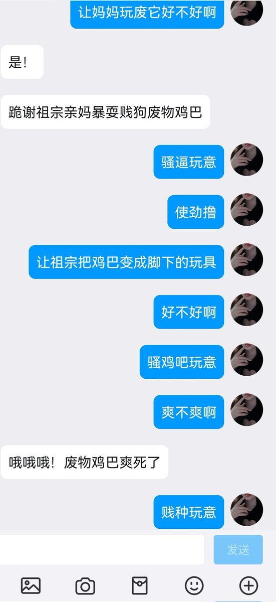
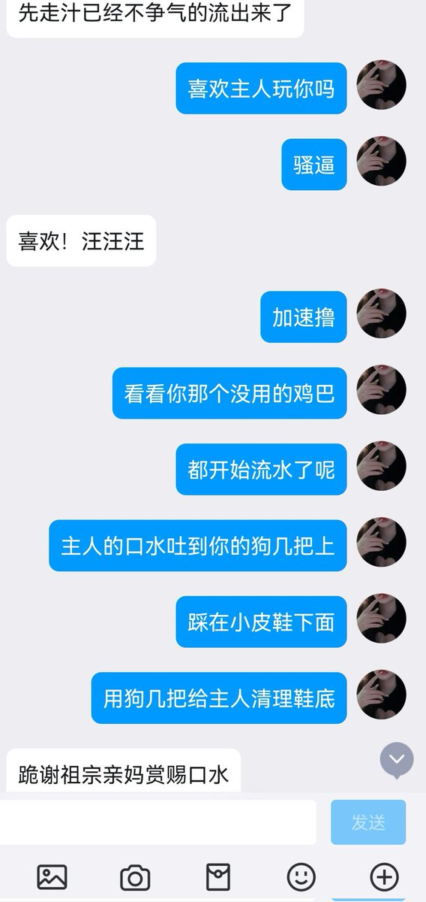
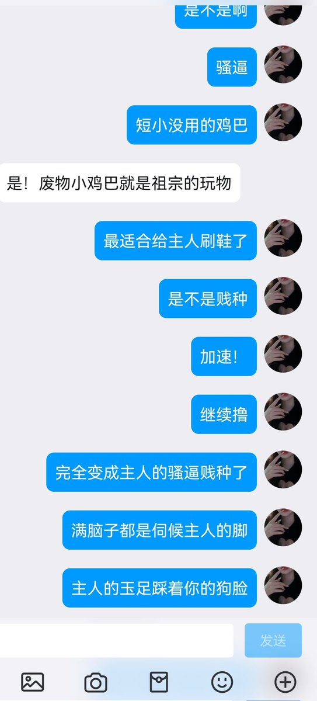

千秋 依奈（文媛姬/互推/长期营业）
@ByakuyaHyou
RT @Dear34585171693: 让亲妈玩废你这个短信没用早泄滑精的牙签小鸡巴～变成被妈妈踩着玩的小玩具～涂上妈妈的口水～专门给妈妈清理鞋底～
这么短小的废物几把～刚好可以清理鞋底沟壑里的污垢呢～
清理干净～在伸进贱狗的嘴巴里～
用你的狗舌头好好舔
酸臭的…



Dear鹿公主 （文援姬）互推
@Dear34585171693
让亲妈玩废你这个短信没用早泄滑精的牙签小鸡巴～变成被妈妈踩着玩的小玩具～涂上妈妈的口水～专门给妈妈清理鞋底～
这么短小的废物几把～刚好可以清理鞋底沟壑里的污垢呢～
清理干净～在伸进贱狗的嘴巴里～
用你的狗舌头好好舔
酸臭的味道混合着自己鸡巴的骚味～
爽死了吧～ https://t.co/w5kErBPVAy